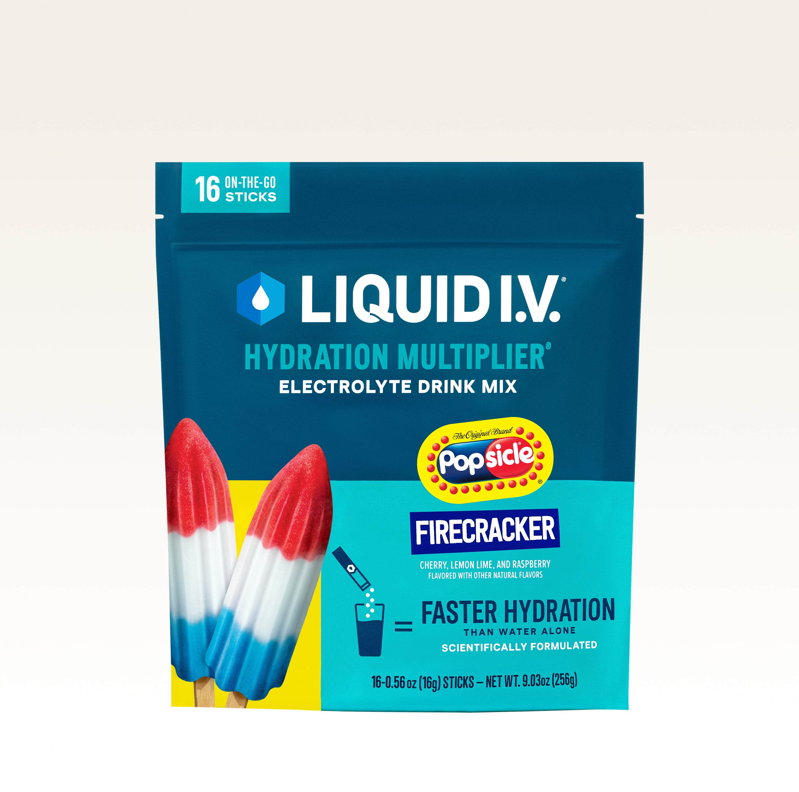

Product imagery supplied by the retailer. Packaging may vary — verify the Supplement Facts panel on the container you receive.
Liquid I.V.
Hydration Multiplier
Our analysis — editorial take, not from the label
Sugar-based ORS-style stick: 11 g of sugars alongside 500 mg sodium, the glucose-plus-sodium pairing used in oral rehydration formulas.
- Sodium
- 500 mg
- Potassium
- 380 mg
- Sugar
- 11 g
- Servings
- 16
Price tier: Premium · relative cost per full serving across this database
We don't list dollar prices — they change daily and go stale. Check the live price instead:
View current price at Amazon Compare all hydration mixesScoop Sense doesn't collect user reviews and won't invent them. Read customer reviews on Amazon
Affiliate links — Scoop Sense may earn a commission at no additional cost to you.
Large flavor range led by Lemon Lime and Passion Fruit, sweetened mainly with cane sugar and dextrose.
Label verified: July 2026 · View label source
Label data
Per full serving · 16 servings per container · from the manufacturer's panel
| Sodium | 500 mg |
|---|---|
| Potassium | 380 mg |
| Magnesium | 0 mg |
| Sugar | 11 g |
| Cane sugar + dextrose | 11 g |
| Proprietary blend | No |
Primary label source: Nutrition panel for Lemon Lime Hydration Multiplier · verified July 2026
Cautions
- 11 g added sugar per stick — this is a sugar-based rehydration design, not a zero-sugar mix
- 500 mg sodium per serving counts toward daily sodium
- Talk to your doctor if you manage blood pressure or blood sugar
Formulated for healthy adults — not intended for anyone under 18. Full health & safety notes
Product details
Where this label sits
Liquid I.V. Hydration Multiplier is one of the hydration mixes in the Scoop Sense database. It runs 16 servings per container at the full labeled serving. Everything on this page comes from the manufacturer's supplement facts panel as of July 2026 — never from the marketing page.
Key ingredients & studied doses
- Sodium · 500 mg. Sodium is studied for its role in helping the body retain and distribute fluid during sweating.
- Potassium · 380 mg. Potassium contributes to normal muscle function and fluid balance.
- Cane sugar + dextrose · 11 g. Glucose paired with sodium is the classic oral-rehydration-solution approach studied for fluid absorption in the gut.
Flavors & sweetener
Large flavor range led by Lemon Lime and Passion Fruit, sweetened mainly with cane sugar and dextrose.
Who it's best for
Everyday training and moderate sweat losses — a middling sodium load. The sugar is part of the design, aiding fluid uptake the way oral rehydration research uses glucose — skip it if you want zero sugar. A sensible first tub — nothing on the panel that catches a new user out. Derived from the label figures above — not medical advice.
How we log this label
Every entry is built the same way: we read the current supplement facts panel, log each disclosed dose, compare it against the amounts used in published research, flag proprietary blends, and state the cautions plainly. The full methodology explains each step.
This label against the research
How we evaluate labelsEach bar shows the amount commonly used in published human research, and where this label's dose falls against it. Research amounts are context, not a recommendation — they are not doses, and nothing here is medical advice. The bars compare what the label states; we do not laboratory-test the product to confirm it.
-
Sodium per litre1057 mg
At or above the studied amount0studied range 300 mg–700 mg2000 mg
500 mg per serving mixed into 473 ml is about 1057 mg per litre. Sports-nutrition guidance puts sodium somewhere between about 230 and 1100 mg per litre of fluid for sustained sweating, depending on which body is writing — 300–700 mg per litre sits inside every version of it. Higher-sodium mixes are built for heavy sweat losses, not for casual sipping.
Source: Mosler et al., German Journal of Sports Medicine 2020 (DGE position) — “the optimal sports drink should contain 400-1100 mg / l sodium in addition to carbohydrates (4-8%)”
What other people say
Why we don't rate productsTwo different things, side by side: the rating the seller publishes on its own store, and what independent users write in public threads. Scoop Sense writes neither and collects no reviews of its own. Neither is evidence that a product works — they describe what people experienced and expected, not what the research shows.
On the seller's page
4.6 / 5
1,200 ratings
The brand's own storefront, read July 2026. A seller's rating is collected and moderated by the seller — treat it as a marketing figure, not an independent one.
What people actually report
Opinions split sharply on whether Liquid I.V. actually hydrates better than plain water, with many finding it too salty or artificial-tasting even as some heavy sweaters keep buying it anyway.
- mixed Does it work better than water?. A widely upvoted thread asked whether Liquid I.V. hydrates better than water at all, with the poster saying they found it salty and were not a huge fan despite trying it.
- negative Taste. Some users say the flavor is too artificial or overpoweringly salty, with one comparing the sensation to drinking powdered water softener.
- mixed Tried for outdoor/manual labor. A landscaper working outside in heat all day tried it for mild dehydration symptoms like headaches and dark urine, though the thread doesn't confirm whether it resolved them.
Read the threads yourself
-
“I see liquid IV all up in stores and at gas station counters all the time and I've tried it. Salty. Not a huge fan.”
r/HydroHomies thread, 2024 -
“I adored how wet my water tasted. It was almost like a powdered water softener”
r/HydroHomies thread, 2022 -
“I notice mild symptoms of dehydration like yellow pee, occasionally headaches, etc. I found this product called liquid iv”
r/HydroHomies thread, 2023
Common questions about Liquid I.V. Hydration Multiplier
How much sodium is in Liquid I.V. Hydration Multiplier?
500 mg per serving, alongside 11 g of sugar. Sodium is the main electrolyte lost in sweat, but needs vary widely with sweat rate and diet — and daily sodium from food counts toward the same total.